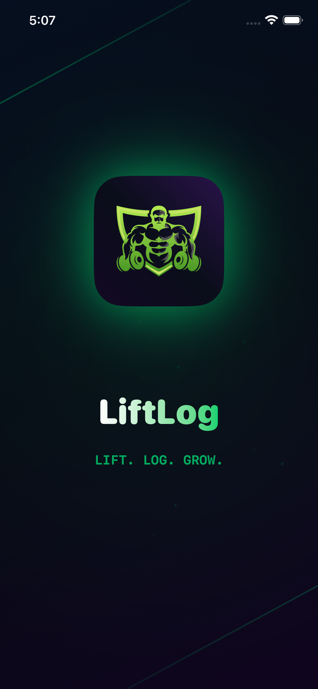
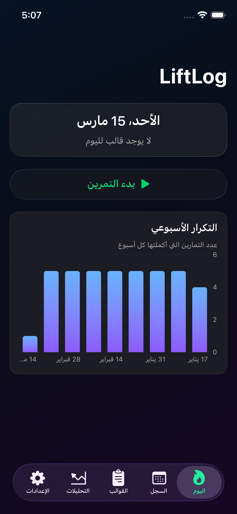
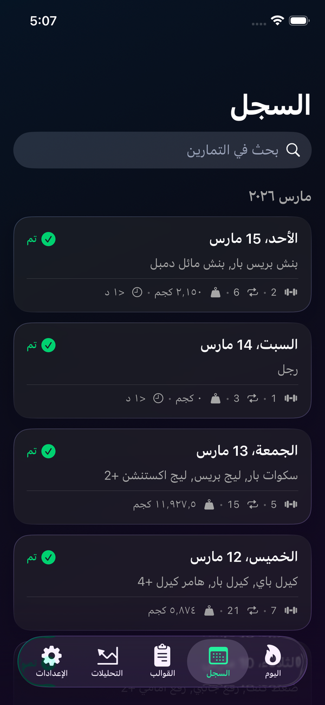
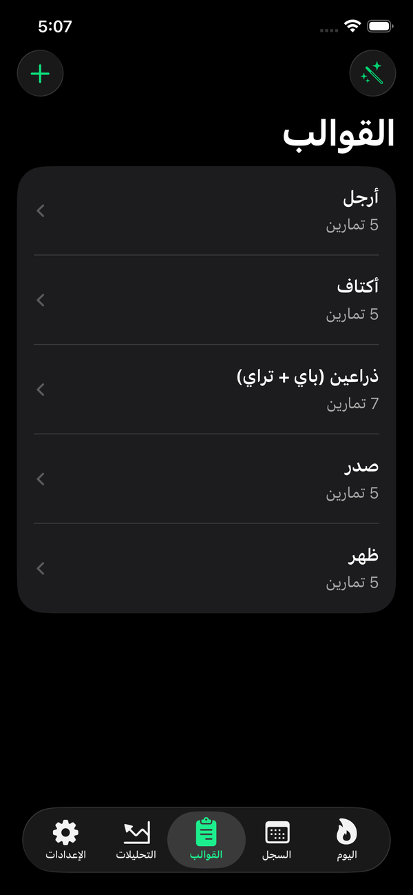
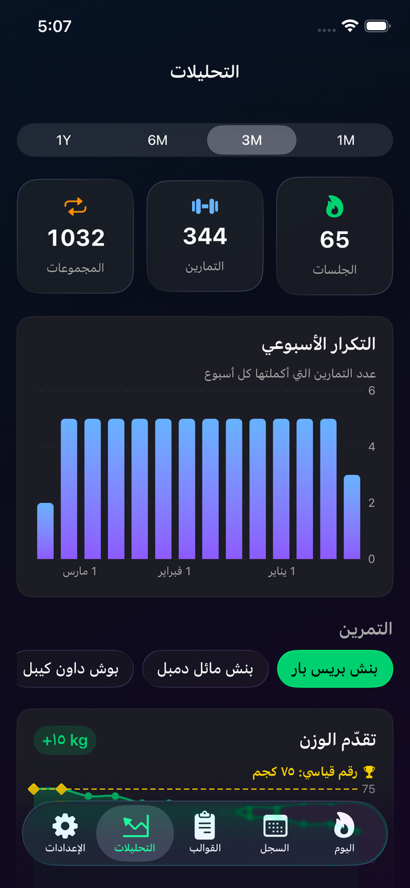
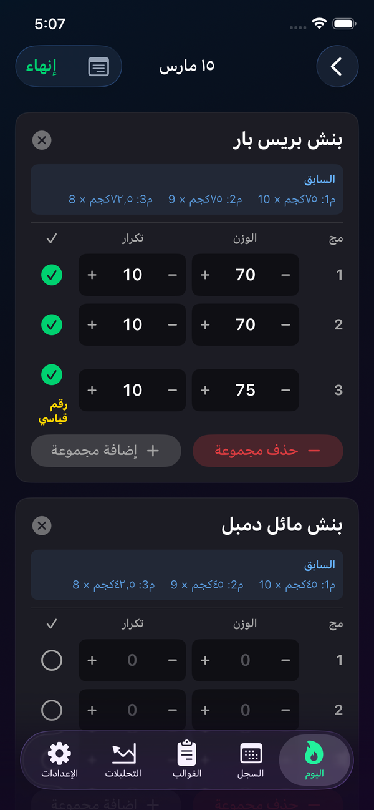
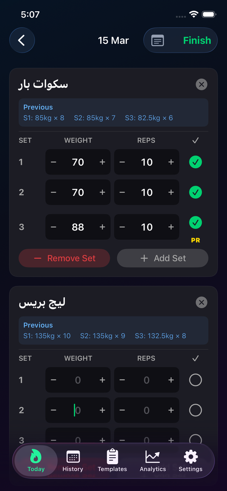

دليل مستخدم LiftLog
كل ما تحتاج معرفته لاستخدام التطبيق باحترافية
LIFT · LOG · GROW
بداية سريعة
أنشئ قالب
من تبويب القوالب، اضغط + وأضف تمارينك
ابدأ التمرين
من شاشة اليوم، اضغط "بدء التمرين" واختر القالب
سجّل أرقامك
أدخل الوزن والتكرارات واضغط بعد كل مجموعة
تابع تقدّمك
في المرة القادمة سترى أرقامك السابقة تلقائياً
ما هو LiftLog؟
LiftLog هو تطبيق مصمم خصيصاً للاعبي كمال الأجسام ورفع الأثقال. يحوّل تجربة الدفتر والقلم التقليدية إلى تجربة رقمية سريعة واحترافية. الفكرة بسيطة: تسجّل تمارينك بسرعة، وفي كل مرة ترجع للتمرين، يعرض لك التطبيق أرقام المرة اللي قبلها عشان تعرف هدفك وتتحسّن.
تسجيل سريع
سجّل الوزن والتكرارات في ثوانٍ معدودة
تتبّع التقدّم
رسوم بيانية توضح تطوّرك عبر الزمن
قوالب ذكية
أنشئ قالب مرة واحدة واستخدمه كل أسبوع
بدون إنترنت
كل بياناتك محفوظة محلياً على جهازك
عربي وإنجليزي
واجهة كاملة باللغتين مع دعم RTL
مزامنة iCloud
بياناتك تنتقل معك لأي جهاز آبل
فتح التطبيق لأول مرة
عند فتح التطبيق لأول مرة، ستمر بشاشات ترحيبية تعريفية تشرح لك أهم ميزات التطبيق. هذه الشاشات تظهر مرة واحدة فقط.

شاشة البداية
شاشات الترحيب
- شاشة ترحيبية مع شعار LiftLog المتحرك وعبارة "LIFT. LOG. GROW."
- ثلاث شاشات تعرض أهم مميزات التطبيق: التسجيل السريع، تتبّع التقدّم، والقوالب الجاهزة
- ثلاث شاشات توضّح المشاكل التي يحلها التطبيق مقارنة بالدفتر الورقي
- شاشة عرض اشتراك Pro (يمكنك تخطيها إذا أردت استخدام النسخة المجانية)
بعد انتهاء شاشات الترحيب، ستنتقل مباشرة إلى الشاشة الرئيسية وتبدأ باستخدام التطبيق فوراً.
الشاشات الرئيسية
التطبيق مقسّم إلى خمسة أقسام رئيسية تصل إليها من شريط التبويب في أسفل الشاشة:
تبويب "اليوم"
هذه الشاشة الرئيسية التي تراها عند فتح التطبيق. مصممة عشان تبدأ تمرينك بأسرع وقت ممكن.

شاشة اليوم
ما الذي تراه في هذه الشاشة:
التاريخ: يظهر تاريخ اليوم الحالي في الأعلى (مثلاً: "الثلاثاء، 18 مارس").
قالب اليوم: إذا كان عندك قالب مربوط بيوم اليوم، يظهر اسمه تلقائياً. وإذا ما كان فيه قالب، تظهر رسالة "لا يوجد قالب لهذا اليوم".
زر بدء التمرين: زر كبير وواضح يبدأ جلسة تمرين جديدة.
زر متابعة التمرين: إذا كان عندك تمرين ما انتهى بعد من اليوم، يظهر زر "متابعة التمرين" بدل "بدء التمرين".
رسم تكرار أسبوعي: رسم بياني يعرض عدد التمارين التي أديتها في كل أسبوع خلال آخر 8 أسابيع.
كيف تبدأ تمرينك:
- اضغط على زر "بدء التمرين"
- ستظهر قائمة بقوالبك المحفوظة — اختر القالب المناسب
- أو اختر "تمرين فارغ" إذا تبي تضيف التمارين يدوياً
- بعد الاختيار، تنتقل مباشرة لشاشة تسجيل التمرين
تبويب "السجل"
هنا تجد سجل كل تمارينك السابقة مرتبة حسب التاريخ ومجمّعة حسب الشهر.
البحث: في أعلى الشاشة يوجد حقل بحث يمكنك من خلاله البحث باسم التمرين أو التاريخ أو ملاحظات الجلسة.
التجميع الشهري: التمارين مجمّعة حسب الشهر والسنة (مثلاً: "مارس 2026")، والأحدث يظهر أولاً.
بطاقة كل جلسة: تعرض تاريخ الجلسة، أسماء التمارين، وإحصائيات سريعة (عدد التمارين، عدد المجموعات، الحجم الكلي بالكيلو، المدة).

شاشة السجل
ما يمكنك فعله:
- عرض التفاصيل: اضغط على أي جلسة لرؤية كل التمارين والمجموعات بالتفصيل
- تعديل جلسة: من داخل صفحة التفاصيل، اضغط على القائمة (⋮) ثم "تعديل"
- تكرار تمرين: اضغط "تكرار التمرين" لإنشاء نسخة لليوم بنفس التمارين
- حفظ كقالب: اضغط "حفظ كقالب" لتحويل جلسة سابقة إلى قالب قابل لإعادة الاستخدام
- حذف جلسة: اضغط مطولاً على الجلسة واختر "حذف" (ستظهر رسالة تأكيد)
تبويب "القوالب"
القوالب هي الطريقة الذكية لتسريع بدء تمارينك. بدل ما تضيف التمارين يدوياً كل مرة، تنشئ قالب مرة واحدة وتستخدمه كل أسبوع.
إنشاء قالب جديد:
- اضغط على أيقونة "+" في أعلى الشاشة
- أدخل اسم القالب (مثلاً: "يوم الصدر والباي")
- ستنتقل لشاشة تعديل القالب حيث يمكنك إضافة التمارين

شاشة القوالب
تعديل القالب:
اسم القالب: يمكنك تعديل الاسم في أي وقت من خانة الاسم في أعلى الصفحة.
ربط بيوم: اختر يوم من أيام الأسبوع (الأحد إلى السبت) لربط القالب به. عندما يأتي ذلك اليوم، يظهر القالب تلقائياً في شاشة "اليوم".
إضافة تمرين: اضغط "إضافة تمرين" لإضافة تمرين مفرد، أو "إضافة مجموعة تمارين" لإنشاء مجموعة فيها عدة تمارين فرعية.
عدد المجموعات: لكل تمرين يمكنك تحديد عدد المجموعات الافتراضي (من 1 إلى 10) باستخدام أزرار + و -.
يمكنك تجربة التطبيق بسرعة عبر الضغط على قائمة "بيانات تجريبية" واختيار "قوالب تجريبية" — سيضيف التطبيق قوالب جاهزة يمكنك التعديل عليها.
تبويب "التحليلات"
هنا تشاهد تقدّمك بصرياً عبر رسوم بيانية تفاعلية تغطي كل تمرين تؤديه.
النطاق الزمني: في أعلى الشاشة تجد أربعة أزرار للتحكم بالفترة الزمنية المعروضة:

شاشة التحليلات
الإحصائيات العامة: ثلاث بطاقات تعرض عدد التمارين الكلي وعدد التمارين وعدد المجموعات خلال الفترة المحددة.
رسم التكرار الأسبوعي: رسم بياني بأعمدة يعرض كم مرة تدرّبت في كل أسبوع.
اختيار التمرين: قائمة أفقية قابلة للتمرير فيها كل أسماء التمارين المحفوظة. اضغط على أي تمرين لعرض الرسوم البيانية الخاصة به:
رسم تطوّر الوزن: يعرض أقصى وزن رفعته في كل جلسة عبر الزمن. يظهر خط متقطع عند الرقم القياسي، والنقاط الذهبية تشير للجلسات التي حققت فيها أو تجاوزت رقمك القياسي.
رسم الحجم الكلي: يعرض إجمالي الحجم (الوزن × التكرارات) لكل جلسة، وهو مؤشر ممتاز على شدة التمرين.
رسم التكرارات: يعرض إجمالي التكرارات لكل جلسة.
إحصائيات التمرين: أربع بطاقات تعرض أفضل وزن، متوسط الوزن، الحجم الكلي، وعدد الجلسات.
تبويب "الإعدادات"
من هنا تتحكم بإعدادات التطبيق، اللغة، الاشتراك، وتصدير واستيراد البيانات.
الاشتراك: إذا كنت مشتركاً في Pro، يظهر حالة الاشتراك وتاريخ التجديد. وإذا لم تكن مشتركاً، يظهر زر "ترقية إلى Pro" وزر "استعادة المشتريات".
اللغة: اختر بين العربية والإنجليزية. عند تغيير اللغة، سيُغلق التطبيق ويعاد فتحه باللغة الجديدة.
تصدير البيانات: ثلاثة خيارات للتصدير — ملف CSV، ملف PDF، أو نسخة احتياطية كاملة بصيغة .liftlog.
استيراد البيانات: استيراد من ملف CSV أو استعادة من نسخة احتياطية .liftlog.
إدارة البيانات: خيار "أرشفة وحذف" يصدّر بياناتك كـ CSV ثم يحذفها، و"حذف كل البيانات" يحذف كل شيء نهائياً.
حذف البيانات عملية لا يمكن التراجع عنها. تأكد من تصدير نسخة احتياطية قبل الحذف.
تسجيل التمرين (الشاشة الأساسية)
هذه هي الشاشة الأهم في التطبيق — هنا تسجّل أوزانك وتكراراتك أثناء التمرين. مصممة لتكون سريعة وعملية حتى بيد واحدة.
أجزاء الشاشة
الشريط العلوي: يحتوي زر الرجوع على اليمين، تاريخ التمرين في المنتصف، وزر الملاحظات وزر "إنهاء" على اليسار.
الملاحظات: اضغط أيقونة الملاحظات في الشريط العلوي لإظهار حقل نص يمكنك فيه كتابة ملاحظات عن الجلسة (مثلاً: "تمرين خفيف بعد إصابة").
بطاقات التمارين: كل تمرين يظهر في بطاقة منفصلة فيها اسم التمرين، أرقام الجلسة السابقة، وصفوف المجموعات.
إضافة تمرين: في أسفل القائمة يوجد زر كبير "+ إضافة تمرين" يفتح شاشة البحث والإضافة.

شاشة تسجيل التمرين
إضافة تمرين جديد
- اضغط على "+ إضافة تمرين" في أسفل الشاشة
- اكتب اسم التمرين (مثلاً: "بنش بريس" أو "Bench Press")
- إذا سبق وأدخلت هذا التمرين، سيظهر في قائمة الاقتراحات — اضغط عليه مباشرة
- أو اضغط زر "إضافة" لإضافة تمرين بالاسم الذي كتبته
التطبيق يحفظ أسماء التمارين تلقائياً. في المرة القادمة، مجرد ما تبدأ بكتابة الاسم، ستظهر الاقتراحات فوراً.
تسجيل المجموعات (Sets)
كل تمرين فيه صفوف مجموعات. كل صف يحتوي على:
رقم المجموعة: يظهر على اليمين (S1, S2, S3...).
الوزن: حقل رقمي مع أزرار -2.5 و +2.5 لتعديل الوزن بخطوات 2.5 كجم. يمكنك أيضاً الكتابة مباشرة في الحقل.
التكرارات: حقل رقمي مع أزرار -1 و +1 لتعديل عدد التكرارات.
زر الإتمام: دائرة على اليسار — اضغط عليها لتسجيل إتمام المجموعة (تتحول لعلامة صح خضراء). ستشعر باهتزاز خفيف كتأكيد.
إضافة وإزالة المجموعات:
- اضغط "إضافة مجموعة" أسفل المجموعات لإضافة مجموعة جديدة
- اضغط "إزالة مجموعة" لحذف آخر مجموعة (الزر يكون باللون الأحمر)
التحكم بالتمرين
اضغط مطولاً على بطاقة التمرين لتظهر قائمة الخيارات:
تحريك للأعلى / للأسفل: لتغيير ترتيب التمارين في الجلسة.
إظهار/إخفاء الملاحظات: لإضافة ملاحظة خاصة بهذا التمرين تحديداً.
تبديل وزن الجسم: لتمارين وزن الجسم (مثل العقلة) — يخفي عمود الوزن ويظهر شارة BW.
حذف التمرين: لإزالة التمرين من الجلسة.
إنهاء التمرين
- بعد ما تنتهي من كل المجموعات، اضغط زر "إنهاء" في أعلى الشاشة
- ستظهر رسالة تأكيد: "إنهاء التمرين؟"
- اضغط "إنهاء" للتأكيد
- يظهر شعار نجاح ذهبي مع رسالة "تم إنهاء التمرين!" ثم تعود للشاشة الرئيسية
إذا اضطررت للخروج قبل الإنهاء، لا تقلق — التطبيق يحفظ كل شيء تلقائياً ويمكنك الرجوع والمتابعة من زر "متابعة التمرين" في شاشة اليوم.
المجموعات وأنواعها
التطبيق يدعم أربعة أنواع من المجموعات، كل نوع له لون مميز يساعدك على التفريق بينها بسرعة:
مجموعة عمل
النوع الافتراضي — مجموعاتك الأساسية بالوزن الكامل
إحماء
مجموعات الإحماء بوزن خفيف قبل العمل الجاد
دروب سيت
مجموعات بتقليل الوزن متتالياً بدون راحة
فشل عضلي
مجموعة دفعت فيها نفسك حتى الفشل العضلي
كيف تغيّر نوع المجموعة:
- اضغط مطولاً على رقم المجموعة (S1, S2...)
- ستظهر قائمة بالأنواع الأربعة
- اختر النوع المناسب — سيتغير لون الرقم فوراً
أرقام الجلسة السابقة
هذه هي الميزة الجوهرية في التطبيق — ميزة التحميل التدريجي (Progressive Overload).
في كل مرة تؤدي تمريناً، يبحث التطبيق تلقائياً عن آخر مرة أديت فيها نفس التمرين ويعرض أرقامها في مربع أزرق فاتح فوق المجموعات الحالية.
المربع يحمل عنوان "السابق" ويعرض كل مجموعة من الجلسة السابقة بهذا الشكل:
السابق
S1: 80 كجم × 10 تكرارات
S2: 80 كجم × 8 تكرارات
S3: 75 كجم × 8 تكرارات
هدفك في كل جلسة هو أن تحاول رفع أكثر أو تكرار أكثر مما فعلت المرة السابقة. هذا هو مفتاح التقدم في رفع الأثقال.
الأرقام القياسية (PR)
التطبيق يتتبع أرقامك القياسية تلقائياً لكل تمرين. عندما ترفع وزناً يساوي أو يتجاوز أعلى وزن سبق أن رفعته في هذا التمرين، تظهر شارة ذهبية PR بجانب المجموعة.

شارة الرقم القياسي (PR) أثناء التمرين
في شاشة التمرين: شارة ذهبية صغيرة تظهر بجانب المجموعة التي حققت فيها رقماً قياسياً جديداً.
في التحليلات: خط متقطع أفقي على رسم تطوّر الوزن يشير لأعلى وزن. النقاط الذهبية على الرسم تشير للجلسات التي حققت فيها الرقم القياسي.
مجموعات التمارين
يمكنك تنظيم التمارين في مجموعات — مفيدة جداً للسوبر سيت أو لتجميع تمارين عضلة واحدة معاً.
إنشاء مجموعة تمارين في القالب:
- في شاشة تعديل القالب، اضغط "إضافة مجموعة تمارين"
- أدخل اسم المجموعة (مثلاً: "سوبر سيت صدر")
- أضف التمارين الفرعية داخل المجموعة
- يمكنك تحديد عدد المجموعات لكل تمرين فرعي بشكل مستقل
في شاشة التمرين، تظهر المجموعة بأيقونة مجلد باللون الأخضر مع اسم المجموعة، وتحتها كل التمارين الفرعية بمجموعاتها الخاصة. يمكنك إضافة تمارين فرعية جديدة أثناء التمرين أيضاً.
التصدير والاستيراد
تصدير البيانات
ثلاث طرق لتصدير بياناتك متوفرة من الإعدادات:
ملف CSV: جدول بيانات يمكن فتحه في Excel أو Google Sheets. مفيد للتحليل المتقدم.
ملف PDF: تقرير مهيأ للطباعة بتصميم احترافي. مفيد لمشاركة سجلك مع المدرب.
نسخة احتياطية .liftlog: نسخة كاملة من كل بياناتك. مفيدة للنقل إلى جهاز جديد أو كتأمين لبياناتك.
استيراد البيانات
يمكنك استيراد البيانات من مصدرين:
استيراد من CSV: اختر ملف CSV من جهازك. ستظهر شاشة معاينة تعرض ملخصاً للبيانات قبل الاستيراد، مع خيار للتحكم بالتعامل مع التكرارات (تخطي / استبدال / استيراد الكل).
استعادة من نسخة احتياطية: اختر ملف .liftlog لاستعادة كل بياناتك بالكامل.
سيناريوهات الاستخدام
السيناريو الأول: أول يوم تمرين
وصلت الجيم وجاهز تسجّل تمرينك لأول مرة باستخدام التطبيق:
- افتح التطبيق واضغط "بدء التمرين" من شاشة اليوم
- اختر "تمرين فارغ" بما إنك ما أنشأت قوالب بعد
- اضغط "+ إضافة تمرين" واكتب اسم أول تمرين (مثلاً: "بنش بريس")
- سجّل الوزن والتكرارات لكل مجموعة واضغط الدائرة بعد كل مجموعة
- كرر الخطوة 3 و 4 لكل تمرين في جلستك
- بعد الانتهاء، اضغط "إنهاء"
بعد أول تمرين، اذهب للسجل واضغط على الجلسة ثم اختر "حفظ كقالب" — بكذا ما تحتاج تكتب أسماء التمارين مرة ثانية.
السيناريو الثاني: إعداد الجدول الأسبوعي
عندك برنامج تدريبي وتبي تجهّز قوالب لكل يوم:
- اذهب إلى تبويب "القوالب"
- اضغط "+" لإنشاء قالب جديد
- سمّه (مثلاً: "يوم الصدر والترايسبس")
- أضف كل التمارين وحدد عدد المجموعات لكل تمرين
- اختر يوم الأسبوع المناسب (مثلاً: الأحد)
- كرر لباقي أيام التدريب
الآن كل يوم تفتح التطبيق، يعرف أي قالب المفترض تستخدمه ويعرضه لك تلقائياً.
السيناريو الثالث: متابعة التقدّم
بعد شهر من التدريب المنتظم، تبي تشوف هل تحسّنت:
- اذهب إلى تبويب "التحليلات"
- اختر النطاق الزمني المناسب (مثلاً: 1 شهر)
- مرر في قائمة التمارين واضغط على التمرين اللي تبي تتبّعه
- تأمل رسم تطوّر الوزن — إذا الخط صاعد، أنت في الطريق الصحيح
- تحقق من الحجم الكلي والتكرارات أيضاً
السيناريو الرابع: النسخ الاحتياطي قبل تغيير الجهاز
عندك جهاز جديد وتبي تنقل بياناتك:
- من الإعدادات، اضغط "تصدير نسخة احتياطية كاملة"
- شارك الملف عبر AirDrop أو iCloud أو أي طريقة
- على الجهاز الجديد، ثبّت التطبيق وافتح الإعدادات
- اضغط "استعادة من نسخة احتياطية" واختر الملف
- تأكد من البيانات في شاشة المعاينة ثم أكّد الاستيراد
إذا كنت تستخدم iCloud، بياناتك تتزامن تلقائياً بين أجهزتك بدون الحاجة لتصدير يدوي.
نصائح للمبتدئين
قبل ما تبدأ أسبوعك التدريبي، خصص 5 دقائق لإنشاء قوالب لكل يوم تدريب. هذا يوفر عليك وقت كبير كل يوم.
سجّل كل مجموعة فور انتهائك منها — لا تنتظر نهاية التمرين. بكذا تضمن دقة الأرقام وما تنسى شيء.
المربع الأزرق اللي يعرض أرقام المرة السابقة هو أهم أداة عندك. حاول دائماً إنك ترفع أكثر ولو بمقدار 2.5 كجم أو تكرار واحد زيادة.
لا تنسى تصنّف مجموعاتك (إحماء، عمل، دروب سيت، فشل عضلي). هذا يعطيك صورة أوضح عن تمرينك في السجل والتحليلات.
خصص 5 دقائق في نهاية كل أسبوع لمراجعة تبويب التحليلات. تتبّع تمرين أو اثنين مهمين عندك وتأكد إن الخط صاعد.
كل شهر أو شهرين، صدّر نسخة احتياطية .liftlog من الإعدادات واحفظها في مكان آمن. بياناتك التدريبية ثمينة ولا تقدر بثمن.
إذا حسيت بألم أو غيّرت تقنية التمرين أو كان عندك ملاحظة مهمة، استخدم حقل الملاحظات. هذه المعلومات تكون قيّمة جداً لما ترجع لها لاحقاً.